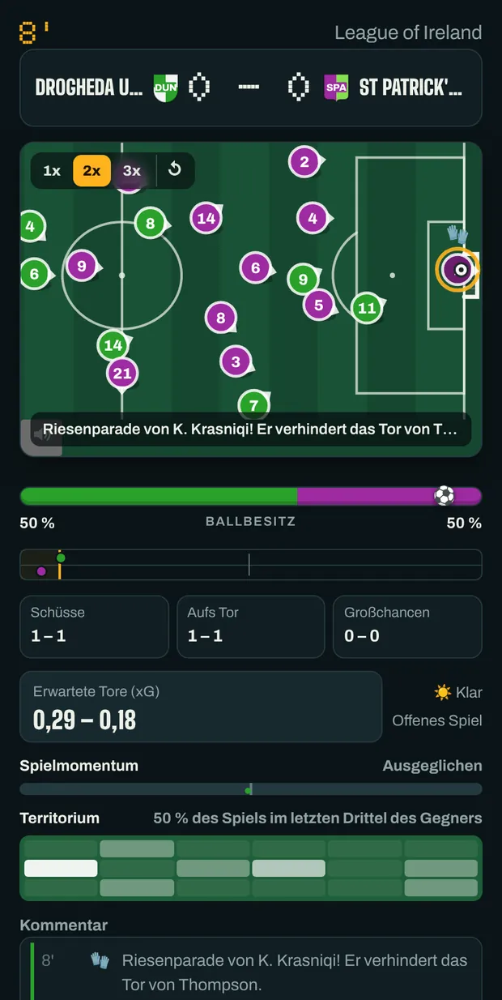
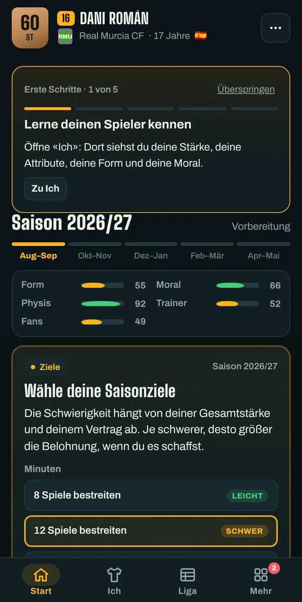
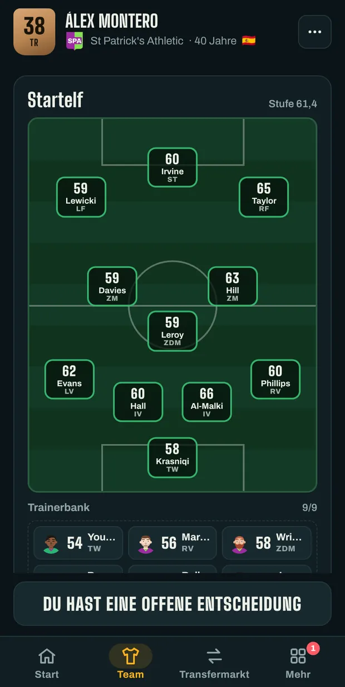
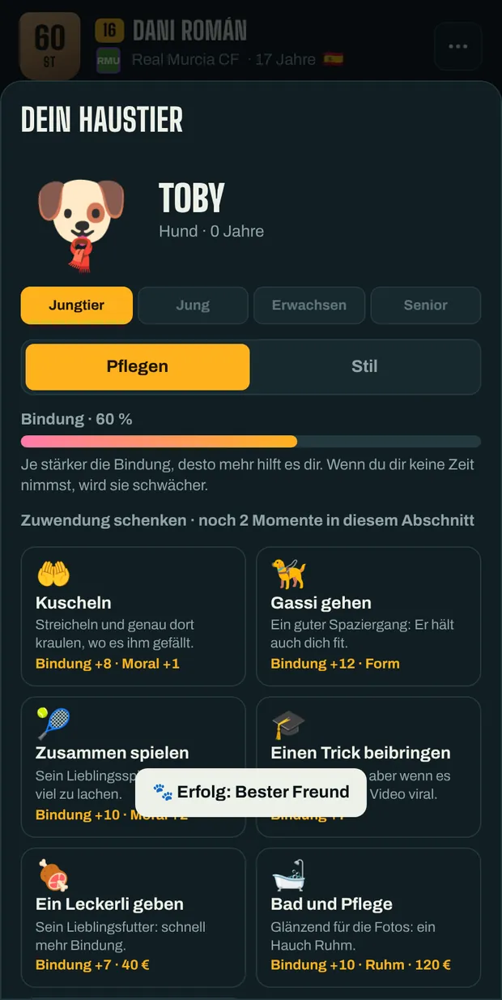

Erschaffe deinen Fußballer und mach ihn zur Legende.
Unterschreib bei einem Verein, spiel die Partien live und entscheide jeden Schritt deiner Karriere: Verträge, Presse, Kabine und Nationalmannschaft. Oder setz dich auf die Bank und führe selbst das Team.
Kostenlos und ohne Konto. Deine Spielstände werden in diesem Browser gespeichert.
Wähle, wie du spielst
Drei Arten zu starten. Du kannst mehrere Spielstände gleichzeitig haben und jederzeit wechseln.
-
Spielerkarriere
Erschaffe deinen Fußballer und erlebe seine ganze Karriere, von der Jugend bis zum Karriereende. Danach kannst du als Trainer weitermachen.
-
Trainerkarriere
Starte auf der Trainerbank des Vereins deiner Wahl: Transfers, Aufstellung, Vertragsverlängerungen und Stimmung in der Kabine. Dazu taktische Wechsel mitten im Spiel.
-
Gründe deinen Verein
Erfinde einen Verein mit Namen, Farben und Wappen, steck ihn in die Liga deiner Wahl und bring ihn mit einem neuen Kader nach oben.
Alle Modi gibt es im Männer- und im Frauenfußball.
So wird gespielt
Eine Spielwoche braucht nur einen Tipp. Das Wichtige, das Spiel und die Entscheidungen, siehst du in Ruhe.




Was eine Saison bringt
Ligen, Pokale und Nationalteams aus aller Welt, mit erfundenen Namen nach Vorbild des echten Fußballs.
- Spiele zum Zuschauen
- Die Punkte bewegen sich nach Tempo, Passspiel und Stellungsspiel jedes Spielers. Elfmeter und Freistöße schießt du selbst.
- Entscheidungen neben dem Platz
- Pressekonferenzen, Angebote, Ärger in der Kabine und Momente, die eine Karriere verändern.
- Dein Transfermarkt
- Verhandle Verträge, bitte um einen Wechsel oder kaufe und verkaufe als Trainer, damit die Kasse stimmt.
- Erfolge und Hall of Fame
- Dutzende Erfolge, Trophäen und Rekorde, die bleiben, auch wenn du ein neues Spiel beginnst.
- In fünf Sprachen
- Spanisch, Englisch, Deutsch, Italienisch und Französisch. Jederzeit im Menü umstellbar.
- Dein Spielstand, immer dabei
- Kopiere deinen Spielstand als Code und spiel in einem anderen Browser oder in der Android-App weiter.
Dein erstes Spiel beginnt jetzt
Nichts installieren, keine Anmeldung. Wenn du den Tab schließt, wartet dein Spiel genau dort, wo du aufgehört hast.